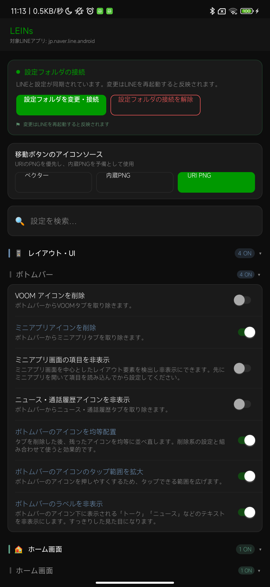
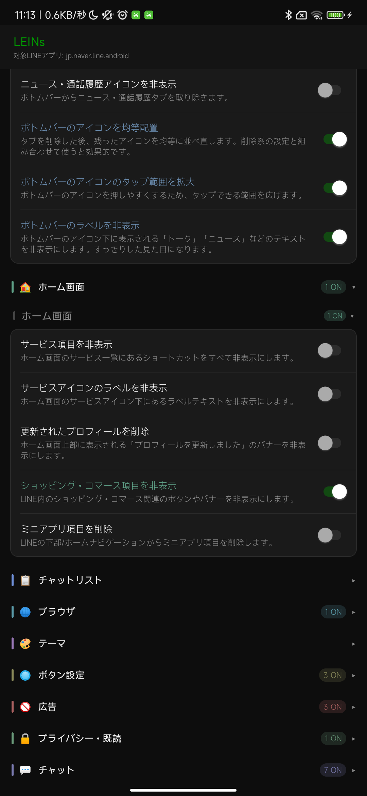

導入方式を確認する
ROOT版またはLsPatch版のどちらで使うかを確認します。使っているAPKや環境によって、表示される機能が変わることがあります。
ROOT版 LsPatch版LINEを使いやすく整える拡張モジュール
初めての人でも迷わないように、導入後に見る場所、設定画面の開き方、UIスタイル、機能カテゴリをまとめています。

Start
Code Recreated UI
LIME-beta-hiro の MainActivity.java、MainActivityMiuix.kt、MainActivityExpressive.kt をもとに、実機スクリーンショットなしでUI構造を再現しています。
対象LINEアプリ
jp.naver.line.android設定フォルダが接続されています
接続済み
miuix部品とMIUIらしい余白
設定フォルダ、UIスタイル、機能カテゴリを一か所で管理します。
Dialogs and settings renderer
画像追加、ミュート、既読ボタン
Screenshots

Features
タブやヘッダー、画面内の表示項目を整理します。
ホーム画面5件ホームのサービス項目やコマース表示を調整します。
チャットリスト7件チャット一覧の表示、未読、並びに関わる項目です。
ブラウザ・リンク3件リンクを外部ブラウザで開く設定を確認できます。
テーマ・外観5件ダークテーマ、フォント、見た目の調整です。
ボタン設定6件LEINsボタンや補助ボタンの位置を調整します。
広告3件広告やおすすめ表示の削除に関する項目です。
プライバシー・既読15件既読防止、確認履歴、ブロック監視などをまとめています。
チャット・メッセージ24件送信取消保護、保存、検索、メッセージ操作の項目です。
通知15件通知ミュート、画像追加、リアクション通知を調整します。
通話・着信音10件通話ボタン、着信音、発信音まわりの設定です。
バックアップ・復元4件トーク履歴や画像フォルダのバックアップを確認します。
上級者向け14件通信改変、トークン、解析向け項目をまとめています。
一致するカテゴリがありません。
Support
動かない、項目の意味が分からない、バグを見つけた場合は、Wikiで確認してからサポート先に報告してください。